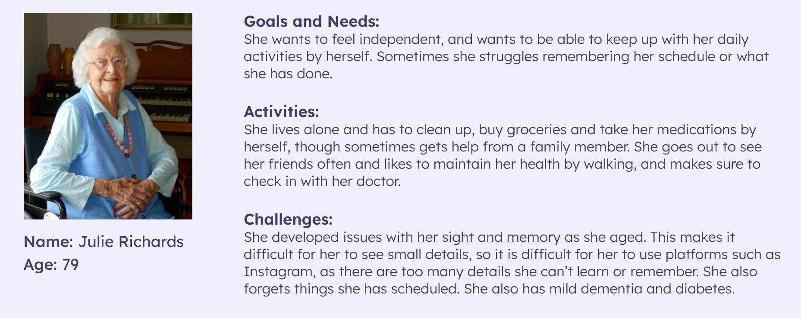
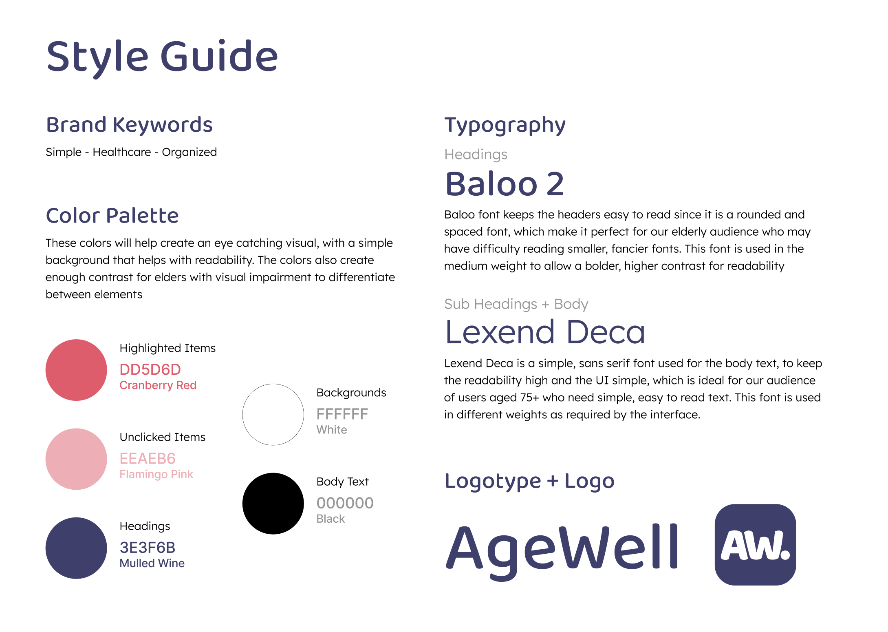

OCT. - NOV. 2023
AgeWell App Prototype
Academic Project, Interface Design (IAT 334)

Overview
In a group of three, we were tasked with creating a mobile application for users 75-years and older, based on user research and testing. We created “AgeWell” a mobile that assisted elderly users with remembering personal tasks, events and symptoms to report to their caretakers and or doctors.
My Roles
Visual Design, Styleguide Creation, Prototyping, User-Testing
Tools
Figma, Protopie
Team
Areeba Ali, Karina Sheun, Lauryn Yau
Process Analysis
Secondary Research
The process started by researching articles that discussed the needs of elderly users when using mobile apps, before making a persona based on that research. Based on my findings, elderly users tend to have more needs medically (such as medications and healthcare appointments) which can be difficult to keep track of and remember for our specific audience (who have poor memory due to age) and may need assitance, however users want to feel independent and take care of themselves on their own. I created a persona to represent the goals, needs, challenges and activities based on our research.
Additionally, I researched mobile and web interfaces that are beneficial to elderly users who may have issues with their vision, memory and mobility, such as implementing high contrast colours, minimalistic interfaces, large, san-serif text and large buttons that are easier for users to see and interact with.
User Persona
Styleguide
To accomodate for our users' need for independence we decided that it would be useful to create an app that allowed users to create reminders, access a calendar and tracked their daily symptoms, all in one place. We created a styleguide including a colour palette and typeface that is highly visible for elderly users and created wireframes, in which I gathered reference images, inspirational pieces and further research into mobile applications/attributes best suited for elderly users. We used Protopie to create a functioning prototype to use for user-testing.
Styleguide
User-Testing and Interviews
We conducted user-testing with users within our desired age range (75+) and received feedback before applying necessary changes. For the sake of time, each group member interviewed one user each using "Think-Aloud Testing" and collected feedback to reflect on as a group. With my user-tester I asked pre-test questions about their previous experiences with health/reminder related apps. The user was given a list of tasks to complete to illustrate how a user would typically use AgeWell (ex. create a new account and login, create a reminder, complete a daily check-in), and took notes as they illustrated their thought process.
Testing sessions closed with follow-up questions to define areas with usability issues. I took notes on moments when the user seemed more confused, and asked them to elaborate on what about their experience made them confused.
Our results showed that there was a lack of instruction in the beginning, leaving users confused in terms of what they were meant to do with app, resulting in the implementation of a tutorial after onboarding. Users had difficulty differentiating information on different pages as they looked too similar, and the layout of pages such as the homepage, which displayed previews of information from other pages, were simplified to look different from their stand-alone pages.
Website and Final Prototype
We created a site to advertise our app and showcase our process in detail.
Link to AgeWell Website
Project Conflicts and Solutions
We had difficulty implementing features that were highly visible for users and easy to interact with on mobile. During our user tests we realized that some elements were too small for users to press if their hands are less mobile, and we were unsure how to design bigger elements in a way that still looked visually appealing. An issue we had after our user interviews was that users had a hard time figuring out what to do with the app, and the seeing the homepage with multiple different features was overwhelming at first. I suggested that we implement an onboarding tutorial for users that appeared after creating an account and could be viewed again through the app's settings, that showcased an overview of the app's features (reminders, calendar, daily logs, and personal profile).
Onboarding Pages
Project Reflections
As a result of this project I was able to learn and develop my skills in user testing and interviewing. Through this project I was able to conduct user testing and interviews for the first time, in which I learned that in order to have a successful user test as the interviewer/facilitator you have to come prepared with good and thought-provoking questions (i.e. no questions that can be answered with a simple yes or no), and be able to detach yourself from the product being tested as to not interfere with the tester when they critique the product or get stuck.
It was difficult for me to leave behind what I was used to designing, such as small minimalistic elements for users who had no issues with visual elements, or mobility/accessibility, and I feel that overtime I had worked myself into a box when designing and stuck to what I was comfortable with, however, this project helped me recognize this issue and start researching different methods and styles of design to play with and encourged me to work outside of my comfort zone.
During this project I allowed myself to experiment with colour palettes, however I still feel that I could have done something more creative with the colours in the final site, as the final product still looked very monochromatic, and similar to how I usually like to use colour.
Reflecting on this project, I would definitely try to create a concept for an app that went beyond healthcare or memory loss, as many of my peers created apps that had the same concept as AgeWell. I would also try to make the screens less busy to make it easier to elderly users to navigate, possibly only allowing one user input on the screen at a time in the daily log, to make it less overwhelming.
AgeWell Wireframes